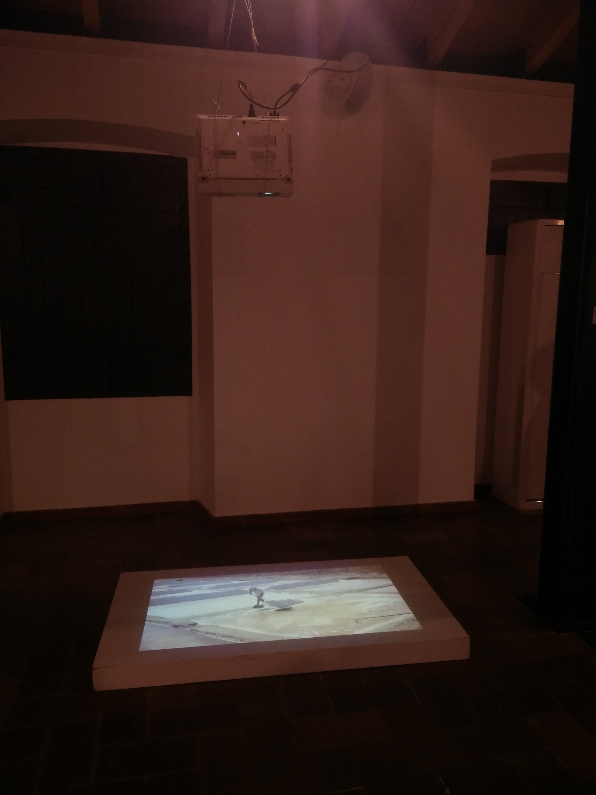

Untitled (burial)
2019
Vídeo HD, cor, 08’49’’, loop
Sinopse:
A artista é enterrada com sal por um marnoto (trabalhador das salinas).
HD video, color, 08'49'', loop
Synopsis:
The artist is buried in salt by a saline worker.



In the collective exhibition RÉSVÉS – Castro Marim/Odeleite, at Casa do Sal
Em Untitled (burial), projeto realizado em 2019, a artista é enterrada por um trabalhador das salinas. Documentado em dois pontos de vista, ambos vídeos com planos fixos, foi posteriormente instalada apenas uma das perspetivas filmadas, na Casa do Sal, em Castro Marim, local onde foi filmada a performance. Os diversos aspetos do sal provêm do facto de ser extraído da água do mar por evaporação. Sal, símbolo de purificação e conservação. Condimento essencial e fisiologicamente necessário, o sal é evocado na liturgia baptismal; sal da sabedoria, é por isso mesmo o símbolo da alimentação espiritual. O marnoto trabalha nas salinas diariamente, retirando, individualmente, entre seis a sete toneladas de sal por dia. A salina localiza-se junto a um cemitério, coincidência constatada apenas no dia da performance.
⤹